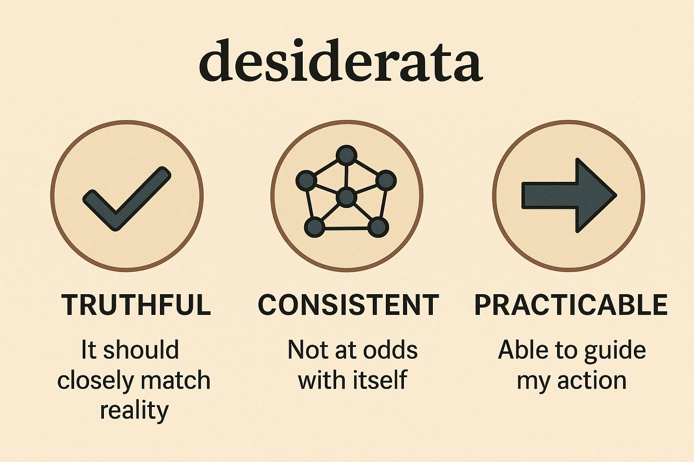

I'm intrigued by mental models. And of all our mental models, the one that we call our worldview is forefront. If you were to ask me "Doug, what's your worldview?", "Christian and Bayesian" would be my answer. These two might seem incompatible, but I think they work well together.
In this post, I explore Christianity and Bayesian worldviews, seeing how each one works and how they work together. First, we'll define terms What's a worldview?, then outline A Bayesian worldview and A Christian worldview before asking Are Christianity and Bayesianism compatible? and concluding.
A worldview is a belief system. Importantly, I'll define it as the practical belief system that we employ in order to live. It helps us connect up what we observe about the world with how we act in it. For example, I currently think that quantum mechanics is an accurate theory that has stood up to scrutiny — I'd say that I believe in quantum mechanics — but it's not really part of my worldview, because it doesn't bear much significance on how I live my life.
Since it's about practical belief, my worldview is betrayed by what I do, as much as by what I say. For example, if I say I believe in universal human dignity, i.e. that every human is of equal and priceless value, but systematically fail to treat people from all groups in that way, I'm a hypocrite and universal human dignity is not in my worldview.
My worldview is my practical belief system
This definition is a bit more restrictive than many. For example, a compelling alternative is "worldview = world + view: how I interpret my observations of the world". But I think that grounding worldview instead in my practical belief and actions will help keep things relevant rather than pure philosophy, since we all strive to learn how to live.
As we transition into discussing my worldview, let's start with some desiderata. I think a worldview should be
This is by no means exhaustive, and I recognise that I'm already beginning to set out my worldview within these constraints, since they're not self-evident. But we have to start somewhere.

Bayesianism is a statistical technique that aims to keep the options open for invisible variables that aren't directly observed. The maxim goes: If I'm not 100% sure about something (and I rarely am), I must consider all possibilities, based on their relative likelihood.
A basic recipe for being Bayesian looks like this:
For example if you hand me a 6-sided die, I'd probably start with a prior belief that it's most likely to be fair, that the probability of getting a 1 is 1/6. But I'd be open to the possibility that it's unfair; there's some chance the probability of a 1 is actually 1/2. If I can roll the die many times, I can update my belief and have more confidence about what I'm holding. But if asked to predict the probability of getting a 1, I should consider all possibilities, fair and unfair.
A Bayesian worldview keeps the options open for unknown "invisible" variables, considering all possibilities.
Bayesianism is a mathematical inference and prediction technique, but it's a good analogue to a worldview that I respect and aspire to. It doesn't tell you what to believe, but it does give some probabilistic principles that help you to consistently apply those beliefs. (It might seem more like a meta-worldview, but a meta-worldview is still a worldview.)
Applying my Bayesian worldview, I'm allowed to build a mental model of the world, even though I know my model will be wrong, as long as I keep the low-probability possibilities open so that I can adapt to new data. This model enables me to act without certainty, as I can act based on the expected outcome rather than demanding that I know a definite outcome of my actions.
When I act, I should consider all possible states of invisible variables, but I typically find this hard to do in practice, and instead act based on what I think is most probable (there's some analogue here with maximum a posteriori estimation). So, in practice I'm not being a good honest Bayesian, but at least it's a known failing.
Practical example: I'm trying to predict how someone will act in some decision that affects me. Perhaps I believe they're most likely to take the kind/selfless option for this decision. However, as a Bayesian, I admit that I don't know their personality or circumstances perfectly, so I must consider the possibility that they might take a unkind/selfish option, according to how confident I was in my belief, and so should consider the risk.
The desiderata? Bayesianism is practicable, because it enables action in the presence of incomplete information. It lays down some rules for consistency of beliefs, based on probability. It doesn't make truth claims by itself, but a Bayesian model can be evaluated as it updates itself based on evidence in a similar way to a machine learning model, by measuring the performance of its predictions, which gives an empirical metric of truthfulness.
The Christian worldview is that we and the universe that we inhabit were all created by a personal God for his own purposes. He chose to reveal his purposes to us through historical events (occurring ~1300 BC to ~100 AD) and a written record of these events, his intentions and instructions to people.
Crucially, we learn that we (all of mankind through all time) have rejected his right rule over his world, and that he responds in judgement. Although we are unable to make things right with him ourselves, he sacrificed himself in Jesus, who is perfect man and fully God, to achieve what we could not. Jesus came to earth to die to take the judgement we deserved and make us right with God if we choose to follow Jesus. He rose and is ruling now in heaven. However God has patiently waited for over 2000 years for more people to trust in Jesus, before putting an end to this phase of history — we explicitly cannot know when this will happen.
The Christian worldview is that Jesus is both God and the saviour we need, and we're invited to follow him.
As a worldview, Christianity first implies a belief in a set of historical facts including creation, exodus, incarnation, crucifixion and resurrection. Second, it implies a belief in the Biblical interpretation of these events: that we cannot make ourselves good enough for God, but need him to take the punishment that we deserve and step in and change us, but then that we can look forward to eternal life through him. Finally it tells us how to act: to declare Jesus as our master, trust in him alone for our status before God, and consider our time, money and bodies as temporary things that can be used to serve him.
Applying the Christian worldview to daily life mainly informs my thoughts and desires. If my worldview is that Jesus is in charge of my life, I'm invited to think how my life reflects that: Am I trying to please him? Do I want what he wants? Am I grateful for what he has done, or envious of what other people have? All of this should cash out in actions. There are also specific actions that are explicitly commanded or forbidden.
Practical example: Christianity determines what I think is the best use of my time, energy and money. If any of these resources can be used to help someone begin or grow in their relationship with Jesus, then this outcome is worth more than anything else they could achieve. This impacts the way I budget money and schedule time (although I keep falling short of a consistent standard on both counts).
The desiderata? Truthful? This is the big one; I take it to be true as the history is solid and the Biblical interpretation is super-humanly accurate and predictive of what we see today in the world. It's consistent, which would be remarkable if it had only come from human ideas, due to the number of Biblical writers. It's practicable, precisely because our status doesn't depend on our own capacity for moral living, while at the same time demanding that our life must change to match what we believe.
I claim to hold to both worldviews, and consider them to be compatible. For day-to-day life, there aren't many challenges to this; Christianity sets the goals and some absolutes, and Bayesianism helps manage my beliefs and actions in the physical world, cause and effect, etc. For example, Christianity tells me what how the resources, time and money I have can be used for good; Bayesianism helps me earn money by guiding my ML debugging and research.
But let's push the two worldviews until there's an issue. In the previous paragraph, I slipped in "Christianity sets some absolutes". This immediately seems incompatible with the Bayesian worldview, because:
Briefly, on a) I can only act based on a mixture of beliefs if the actions are compatible, otherwise I must pick one. On b) this depends on setting a prior over {no-god, God} and this isn't meaningful, so we must focus on evidence not priors. But let's expand these arguments:
a) Divergent implications mean I must choose
As a Bayesian, I claim some probability distribution over invisible variables. When I want to act, I consider each possible state of these invisible variables, consider the outcome given that state & candidate action, and choose the outcome that maximises some objective. I shouldn't accept absolutes, but should be open to the possibility of being wrong, as this will help me act more robustly when I'm uncertain.
This approach is great for most decisions that we face, but it isn't of help when choosing between God and no-god. The reason for this is that the God/no-god states imply different objectives and there is no way to mix these objectives, they are divergent. If the no-god hypothesis is true, my objective may be personal happiness, or improving the lives of others, or something else, but it must be defined in terms of our life now, as this is all we can expect. If the God hypothesis is true, my objective is God-defined: to serve him now as I await eternal life, no reward now can compare to any reward then, and no cost now can outbalance any reward then. Whichever is correct, they are incompatible, we cannot sensibly trade them off against one another.
Since there is no way to "hedge", we are forced to choose one or the other. And this choice in either absolute truth (at least functionally for selecting our actions) is a rational application of Bayesianism when the implications of an invisible variable are divergent. Note that this isn't Pascal's wager — I do not think this argument tells us which one to choose, but simply that we must choose.
b) Focus on the evidence, not the prior
The prior belief is a key part of Bayesianism. In order to estimate a distribution over invisible variables after observing evidence, we need to say beforehand (or a priori) what we think the distribution is. The Bayesian method doesn't prescribe how to form initial beliefs, only how to update them in light of evidence. I'd argue that it is hard, or even impossible, to state a defensible prior over the God/no-god hypotheses. This is a challenge to the Bayesian method, but in these circumstances we usually try to make a weak-as-possible prior (although defining "weakness" is equally challenging), and focus our effort instead on the evidence.
Why is it so difficult to set a prior over God/no-god? Most of the time, when we choose a prior, it's what I'd call a derived prior, not a root prior. These derived priors aren't really the starting point in the absence of evidence, they're the informed (posterior) beliefs from our general experience, treated as a prior for a specific case. For example, a prior over the speed of an object might assign nonzero probability to every speed between zero and the speed of light, because I believe this to be a cosmic speed limit. But I only believe this because of observation and my sketchy mental model that has been updated by reading and listening.
A prior over God/no-god is necessarily a root prior, as there is no broader context to put this belief in: everything I have ever observed is either part of a God universe or a no-god universe. And this root prior is really hard to build. Priors often have a built-in bias towards simplicity. This is because the more complexity, the more degrees of freedom available, the more the probability must be spread out over those possibilities, in order to sum to 1. But we could argue until the cows come home if the existence of a creator God is simpler or more complex than the non-existence of a god. There is no meta-universal baseline against which to define complexity. Maths, logic and everything observed must be counted as evidence not prior. We have no common starting point, we are comparing contradictory axioms.
I'd encourage Bayesians on both side of the God/no-god fence to consider the evidence.
What, then — give up on Bayesianism? I don't give up on Bayesianism because it hits this fundamental hurdle. It is limited, no doubt, in its ability to answer the God/no-god question. But it does, I believe, encourage an evidence-focused approach, where we must focus our effort on what has been observed, trying to keep our priors as weak as possible as we do so. For those like me who grew up in a Christian household or joined a church for social reasons, the challenge is to consider the possibility that we were taught wrong. For those who grew up in an atheist home or rejected Christianity for social reasons, the challenge is to consider the possibility that they were taught wrong. And as I've already indicated, this exercise leaves me convinced of the truth of Christianity — I'd point to the historical Biblical accounts, the resurrection of Jesus and the explanatory power of the Biblical verdict on humanity as being particularly convincing to me. But I'd encourage Bayesians on both sides of the fence to consider the evidence.
Thank you and apologies. Thank you for reading this far. Apologies for the length of this post (about 2x the expected word count). Some brief closing thoughts:
I've had a great time writing about these two topics that I care deeply about, and I think the connection is curious (although I haven't really figured it out yet). My guess is that you, my reader, would align primarily with either rational/Bayesian or Christian, and so there's a good chance that I offend you with this work, placing too much credence in the other. I hope that at least, this has got you thinking about the different elements of your worldview, how they fit together, and what actually helps you act in life.
Ultimately I believe Christianity and Bayesian are compatible, that both are consistent and practicable and Christianity is fundamentally true. My Bayesianism demands a choice about God, and encourages me to consider the evidence. I hope you're similarly encouraged to consider the evidence.
...if that's you, one way to start is to read John's Gospel for yourself.
Bayesianism isn't a fundamental reality. It's part of my belief system because I trust that it's an effective system in the presence of imperfect knowledge. If there were no invisible variables, I wouldn't need it. But in a world where effects are visible but causes often hidden, I take Bayesianism to provide a consistent and rational way to act.
Bayesianism permits healthy scepticism. I'm quite attracted by scepticism as a general approach to the many "truths" we're confronted with in life. From what I remember about Pyrrho from A Little History of Philosophy (Nigel Warburton), extreme scepticism seems impractical and unhelpful. Without allowing degrees-of-belief from Bayesianism, a sceptic presented with a proposition insists on being allowed to say "I don't know", which isn't a helpful belief for guiding action.
For example, we ask "will it rain tomorrow?" A Bayesian who doesn't know might assign an uninformative prior of {50% yes, 50% no}. A sceptic who doesn't know would say "I don't know". Both characters then watch a weather report that says it'll rain tomorrow. The Bayesian updates their belief, perhaps {80% yes, 20% no}. The full-on sceptic must still say "I don't know", because they don't know. The Bayesian is able to make good use of the evidence and buy an umbrella; the sceptic cannot.
Being wrong in Bayesianism is being surprised. I think this bit is quite beautiful, and it springs from Claude Shannon's seminal work on information theory. If we observe a state $x$ for a visible variable $X$, we can ask our model (before being updated with this observation) what the probability of that event was, written $\mathrm{P}(X=x)$. We call $-\log\mathrm{P}(X=x)$ the surprise associated with this event. If P is small, the surprise is high because something unlikely happened.
So being surprised is essentially being wrong. But information is defined as the average surprise, so if you're surprised a lot (because you're being wrong a lot), you are receiving a large amount of information. Properly handled, information leads to a better set of beliefs, so that you're less surprised in the future. Being wrong leads to knowledge!
Being Bayesian is hard. Although I aspire to Bayesianism, I struggle to do it and suspect I'm not alone in this. The problem is that I often can't sustain multiple theories of the states of invisible variables. I often lean heavily on a single mental model, a construction for how something works under the hood, without considering multiple possibilities, which would be "better Bayesianism". In Bayesian speak, this is "collapsing the posterior", where I consider only the most likely explanation, disregarding others. This difficulty could help explain why populations seem to be better at prediction than individuals — populations are able to consider multiple theories, in a way individuals find hard.
Grace is at the heart of Christianity. Grace is an undeserved and unearned gift from God to us. It means, in contrast to Judaism, Islam, Hinduism and every other religion that I know of, that our standing before God or spiritual progress does not depend on what we can do, but on what God has done through Jesus. We are told to give our lives to Jesus, but this must always come second — God's gift of grace must always come first.
This informs the claim that Christianity is practicable. It isn't a standard that we must uphold. This avoids uncertainties caused by lapses and constant "have I met the bar" questions. Since a deep constant of humanity is our inability to meet any moral bar, even ones we set ourselves, we desperately need grace.
The purpose of life is to glorify God. The Bible is God's revelation of his plan for creation, humanity and history. Shot through the whole Bible is the purpose for all of this, which is to display God's own glory — what he's like and the great works that he has done. This may seem self-centred of God. The two counter-points to this are first that it would indeed be self-centred of a human, since we're not God and are undeserving of such glory, and second that if we look at what God revealing is glory is like, it is very good indeed. As we read the Bible, we see that God reveals his glory as he rescues a people for himself, doing all of the work through his grace. Good for God's glory and good for his people.
The Christian message is beautiful. This is subjective, but there are many reasons why I think the Christian message is beautiful, here are some: